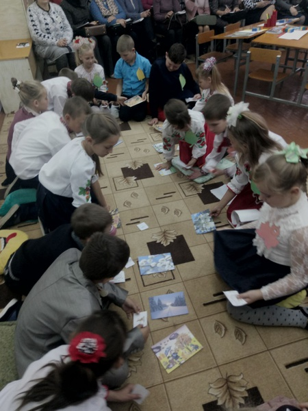
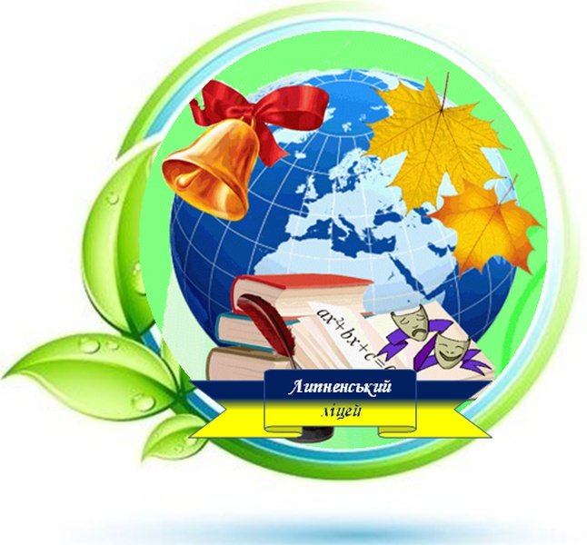
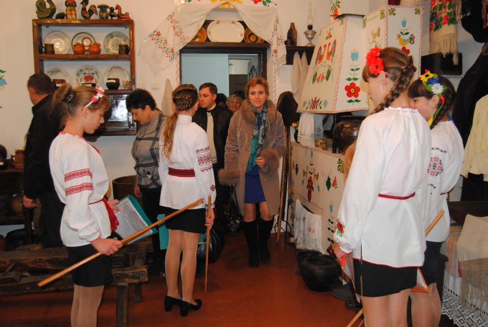

Наш ліцей
Липненський ліцей – заклад, який має свою історію, традиції, філософію освітнього процесу та власну стратегію розвитку.
Читати даліДнів
Годин
Хвилин
Секунд

Липненський ліцей – заклад, який має свою історію, традиції, філософію освітнього процесу та власну стратегію розвитку.
Читати далі
Метою створення шкільної символіки є: створення символів цілісності, єдності та взаємодії учасників освітнього процесу; формування, збереження і розвиток шкільних традицій, спрямованих на вдосконалення соціально-значущих якостей учнів; відображення індивідуальності установи.
Читати далі
В приміщенні нашого ліцею є український музей-світлиця, в якому зібрано багато експонатів.
Читати даліУ нашому ліцеї кожен має право на повагу, безпеку та дружбу!